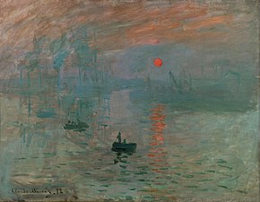
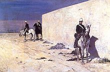
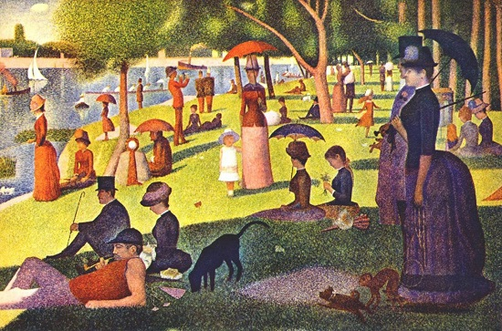
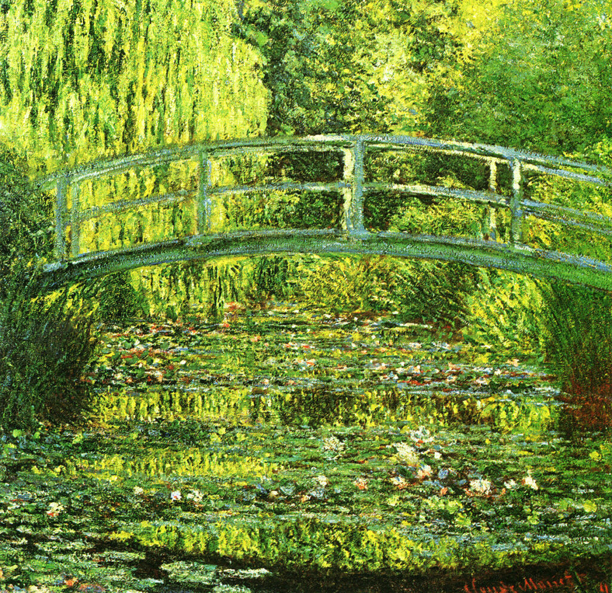
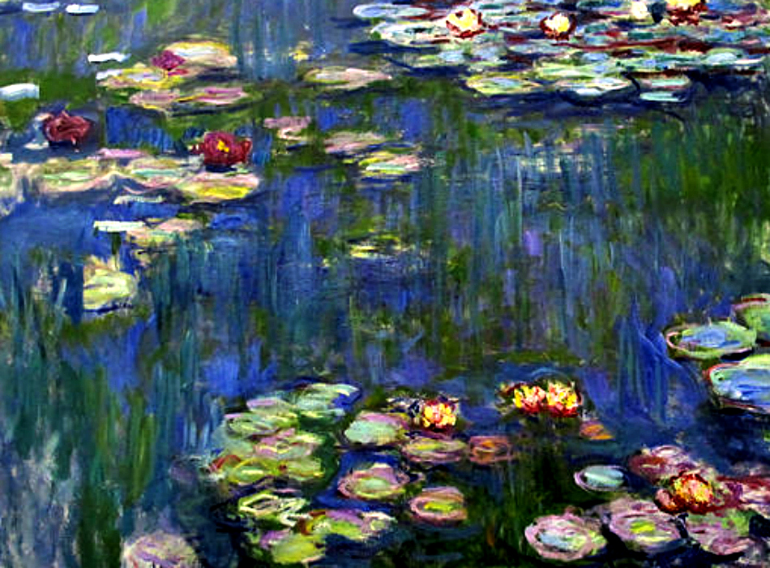

<html>
    <!DOCTYPE html>
</html>
<head>
    <meta http-equiv="X-UA-Compatible" content="IE=edge"/>
    <meta charset="uft-8"/>
    <meta name="viewport" content="width=device width, initial scale=1.0, maximux scale 1.0, user-scalable=no"/>

    <meta name="author" content="Eugenia Pestelli"/>
    <meta name="description" content="questa è una pagina sul movimento impressionista"/>
    <meta property="og:image" content="claude_monet.jpg"/>
    <meta property="og:description" content="Questa è una pagina sul movimento impressionista"/>
    <meta property="og:url" content=""/>
    <meta property="og:title" content="L'impressionismo"/>
    <link rel="icon" href="icons8-puzzle-16.ico" type="image/x-icon">

<title>Arte impressionista</title>
</head>
<header>
    <nav>
        
          <center><span> <a href="./homepage.html">Homepage</a></span>
       <span> <a href="pages/contatti.html">Contatti</a></span>
       <span> <a href="pages/newsletter.html">Newsletter</a></span></center> 
        <a name="inizio"></a>
        
        </ul>
    </nav>
</header>
<body>
<header>
    <h1>Nascita dell'impressionismo</h1>
</header>
<section>
    <article>
        <p>L'Impressionismo è una corrente artistica sviluppatasi in <a href="https://it.wikipedia.org/wiki/Francia">Francia</a>, soprattutto a Parigi, nella seconda metà dell'Ottocento, tra il 1870 e il 1880 e durata fino al primo Novecento.

            Il gruppo degli impressionisti si formò intorno a Édouard Manet, capofila dell'avanguardia artistica parigina negli anni sessanta dell'Ottocento, che però non partecipò a nessuna mostra impressionista. Dopo aver provocato scandali e subito rifiuti dal Salon (l'esposizione organizzata dall'Accademia reale presso il Louvre), i giovani artisti decisero di unire le forze per organizzare mostre indipendenti. Questa idea si materializzò nel 1874, in una mostra presso lo studio del fotografo Nadar a Parigi, in cui vennero riunite le opere di trenta artisti tra cui Paul Cézanne, Edgar Degas, Claude Monet, Berthe Morisot, Camille Pissarro, Auguste Renoir e Alfred Sisley. Il termine "impressionismo" nacque da un'affermazione dal critico d'arte Louis Leroy a proposito del quadro di Monet, "Impression. Soleil Levant". Il critico non apprezzò l'opera esposta e la definì, appunto, poco più che un'"impressione" in quanto gli dava un senso di incompiutezza. Gli impressionisti subirono dapprima violente critiche da parte della stampa e del pubblico, ma successivamente ricevettero il sostegno dei collezionisti, in particolare Gustave Caillebotte, che gli permise di realizzare le loro prime mostre.
            
            L'impressionismo iniziò ad essere accettato a partire dal 1880, grazie al sostegno del nuovo governo di Léon Gambetta e di critici come Émile Zola. Le opere entrarono gradualmente nei musei, nel Salon e nel mercato dell'arte. Il mercante Paul Durand-Ruel svolse un ruolo cruciale nel sostegno e nella diffusione dell'Impressionismo. Dal 1886, grazie alla pittrice Mary Cassatt le opere impressioniste fecero il loro ingresso negli Stati Uniti dove ottennero un grande successo, consacrando Monet e portando allo sviluppo di scuole impressioniste fuori dalla Francia. Gli anni 1890 videro la morte di Morisot, Caillebotte, Sisley e la dispersione del gruppo, mentre si svilupparono nuove avanguardie a cui aderiscono certi impressionisti, come Cézanne e Pissarro.
            
            Gli artisti impressionisti crearono una nuova estetica opposta all'arte accademica, mirando a rappresentare la caducità della luce e i suoi effetti su colori e forme. Nelle loro tele sperimentarono composizioni insolite, dipingendo solitamente en plein air con tocchi veloci; i soggetti furono principalmente paesaggi, scene di vita intima e passatempi del loro tempo.</p>
    </article>
    <figure>
        
        <figcaption>Impressionismo</figcaption>
    </figure>
</section>
<section>
    <header>
        <h1>Impressionismo in Italia</h1>
    </header>
    <article>
        <figure>
        
       <figcaption>Fattori in vedetta</figcaption> 
    </figure>
        <p>In Italia ebbe uno sviluppo non molto particolare, dato dalle esperienze di Federico Zandomeneghi, Giuseppe De Nittis e dei Macchiaioli, più vicine, tuttavia, alla tradizione quattrocentesca.

            La situazione italiana è in questo periodo post-unitario difficile e lenta nello sviluppo della nuova corrente artistica francese. Per questo motivo molti pittori italiani furono affascinati dal nuovo stile e dall'apertura del pensiero parigino, in cui riscontrano una modernità introvabile nella loro patria. Nondimeno il lavoro di macchiaioli come Sernesi, Cabianca, Borrani e poi Fattori degli anni Sessanta e Settanta dell'Ottocento, in contemporanea agli albori dell'impressionismo, è paragonabile nei metodi, nelle tematiche d'attualità e nello stile che persegue la luminosità naturale attraverso l'uso della macchia, e ne costituisce il movimento parallelo, con le dovute differenze di contesto sociale e di territorio.
            
            I macchiaioli italiani conoscono Delacroix, Corot, Courbet e i Barbizonniers e, come gli impressionisti, partono dalle ricerche di questi pittori[118]. Dopo la stagione di Boldini, Zandomeneghi e De Nittis, che potremmo definire impressionisti franco-italiani viste le loro lunghe permanenze parigine, permane in Italia una tradizione tardo impressionista che si protrae nei primi tre-quattro decenni del Novecento, legata ora a Monet, ora a Renoir ora a Cezanne, espressa nell'opera di pittori come Francesco Filippini, amico e compagno di ricerche artistiche di Monet, che si trasferirà a lungo a Parigi fin dal 1879 per divenire inizialmente il principale fondatore dell'impressionismo italiano, ma anche Emilio Gola, Arturo Tosi, Armando Spadini[119]. Una “declinazione” particolare e personale dell'impressionismo di tradizione francese viene inoltre introdotta dal pittore ferrarese Galileo Cattabriga (Bondeno, 1901-1969)[120].</p>
    </article>
</section>
<center>
<table>
    <caption>
        <p>Principali esponenti</caption></p>
        <thead>
            <tr>
                <th> Claude Monet</th>
                <th>Édouard Manet</th>
                <th>Pierre-Auguste Renoir</th>
            </tr>
        </thead>
<tbody>
    <td>
        

    </td>
    <td>
       

    </td>
    <td>
        
    </td>
</tbody>
</table> </center>
</body>

<a href="#inizio">Torna all'inizio della pagina</a>
<br>
    <nav>
    <h2>Principali esponenti</h2>
    <ul>
    <li><a href="pages/Monet.html">Monet</a></li>
   
    </ul>
    </nav>
   
<footer>
    <dl>
        <dt>Creato da</dt>
        <dd><address><a href="eu.pest93@gmail.com">Eugenia Pestelli</a></address></dd>
    </dl>
        <small>Tutti i contenuti sono prottetti dalla licenza creative commons</small>

    
</footer>